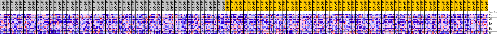
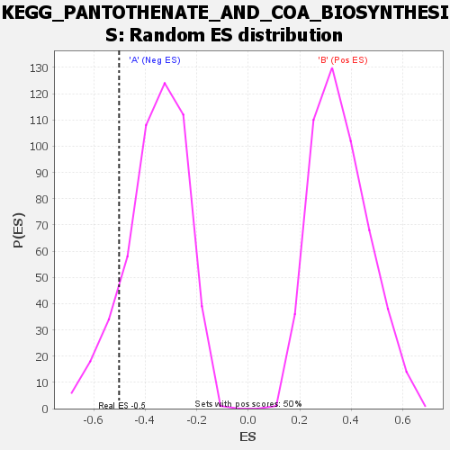

| | | Dataset | my.my.cls#B_versus_A.my.cls#B_versus_A_repos |
| Phenotype | my.cls#B_versus_A_repos |
| Upregulated in class | A |
| GeneSet | KEGG_PANTOTHENATE_AND_COA_BIOSYNTHESIS |
| Enrichment Score (ES) | -0.50120234 |
| Normalized Enrichment Score (NES) | -1.403676 |
| Nominal p-value | 0.118 |
| FDR q-value | 0.45808202 |
| FWER p-Value | 0.843 |
Table: GSEA Results Summary
 Fig 1: Enrichment plot: KEGG_PANTOTHENATE_AND_COA_BIOSYNTHESIS
Fig 1: Enrichment plot: KEGG_PANTOTHENATE_AND_COA_BIOSYNTHESIS
Profile of the Running ES Score & Positions of GeneSet Members on the Rank Ordered List
| SYMBOL | TITLE | RANK IN GENE LIST | RANK METRIC SCORE | RUNNING ES | CORE ENRICHMENT | | 1 | BCAT1 | na | 1029 | 0.129 | 0.1099 | No |
| 2 | PANK2 | na | 7509 | 0.073 | 0.0673 | No |
| 3 | DPYD | na | 9909 | 0.062 | 0.0865 | No |
| 4 | COASY | na | 14340 | 0.046 | 0.0538 | No |
| 5 | DPYS | na | 17235 | 0.037 | 0.0396 | No |
| 6 | PANK4 | na | 21573 | 0.025 | -0.0119 | No |
| 7 | UPB1 | na | 26013 | 0.014 | -0.0766 | No |
| 8 | PANK1 | na | 26100 | 0.014 | -0.0645 | No |
| 9 | ENPP1 | na | 33020 | -0.003 | -0.1835 | No |
| 10 | PPCDC | na | 36423 | -0.012 | -0.2318 | No |
| 11 | BCAT2 | na | 42547 | -0.029 | -0.3116 | No |
| 12 | ENPP3 | na | 44132 | -0.033 | -0.3064 | No |
| 13 | PPCS | na | 55160 | -0.099 | -0.4027 | Yes |
| 14 | VNN2 | na | 55926 | -0.119 | -0.2980 | Yes |
| 15 | PANK3 | na | 56282 | -0.139 | -0.1663 | Yes |
| 16 | VNN1 | na | 56530 | -0.174 | 0.0016 | Yes |
Table: GSEA details [plain text format]

Fig 2: KEGG_PANTOTHENATE_AND_COA_BIOSYNTHESIS
Blue-Pink O' Gram in the Space of the Analyzed GeneSet

Fig 3: KEGG_PANTOTHENATE_AND_COA_BIOSYNTHESIS: Random ES distribution
Gene set null distribution of ES for KEGG_PANTOTHENATE_AND_COA_BIOSYNTHESIS